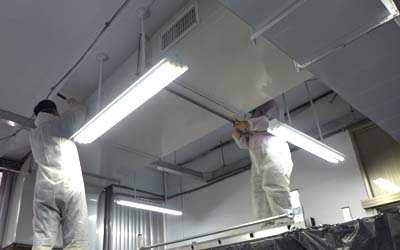

室內空氣問題
大約有70%的傳染病，可經由空氣傳染，另外更有TVOC有害氣體，如裝潢後之甲醛問題。


國內室內空氣品質法規室內空氣品質法於民國103年11月23日公布，其公告應符合本法之第一批場所自民國103年7月1日生效，自公告第1-2批場所，並開始施行，至今已7-8年歷史。
要符合但本法規範之檢查其實很容易，但如要真正符合本法精神又是另一回事，如同驗老車，平常70-80%都是不合格，但檢查驗車那段時間都能夠合格。
明定室內指的是公眾使用建築物的密閉或半密閉空間，及大眾運輸工具搭乘空間，室內空氣污染物包括二氧化碳、一氧化碳、甲醛、總揮發性有機化合物、細菌、真菌、粒徑小於等於10微米的懸浮微粒、粒徑小於等於2.5微米的懸浮微粒、臭氧及其他經中央主管機關指定公告的物質。
法案明定，高級中等以下學校、大專院校、補習班、醫療機構、政府機關、鐵路運輸、民用航空運輸、大眾捷運系統、客運、金融機構、郵局、歌劇院、旅館等，經中央主管機關依場所的公眾聚集量、進出量、室內空氣污染物危害程度，予以綜合考量後經過公告，其室內場所為本法的規範場所。
法案規定，公告場所的所有人、管理人或使用人應置室內空氣品質維護管理專責人員，並應委託檢驗測定機構，定期實施室內空氣品質檢驗測定，並定期公布結果、作成紀錄。如果紀錄有虛偽記載者，所有人、管理人或使用人將處新台幣10萬元以上、50萬元以下罰鍰。
如果公告場所不符合室內空氣品質標準，經主管機關命其限期改善，屆期未改善者，處所有人、管理人或使用人5萬元以上、25萬元以下罰鍰，若依舊未改善，可按次處罰，情節重大者，得限制或禁用其使用公告場所，必要時，得命其停止營業。

改善室內空氣品質方法
在本法管制污染物有五項，其解決方法前兩項業主可輕易解決。
1. 二氧化碳：增加換氣 (外氣引入)。
2. 一氧化碳：增加換氣(外氣引入)。
3. 甲醛及總揮發性有機化合物：換氣法及空氣清淨機裝置。
4. 細菌：日常清潔消，抗法材料、空氣清淨機裝置..等方法。
5. 粉塵(10微米以下簡稱PM10以下)：其中危害最深為PM1-5間，以過濾法及管道清洗為其主要方法。
上述1.2項在中央空調其換風機，只需設定引入外氣及可達到標準，如有3.4.5項問題請洽本公司專業人員(2020.1武漢肺炎防治亦可洽本公司) 。